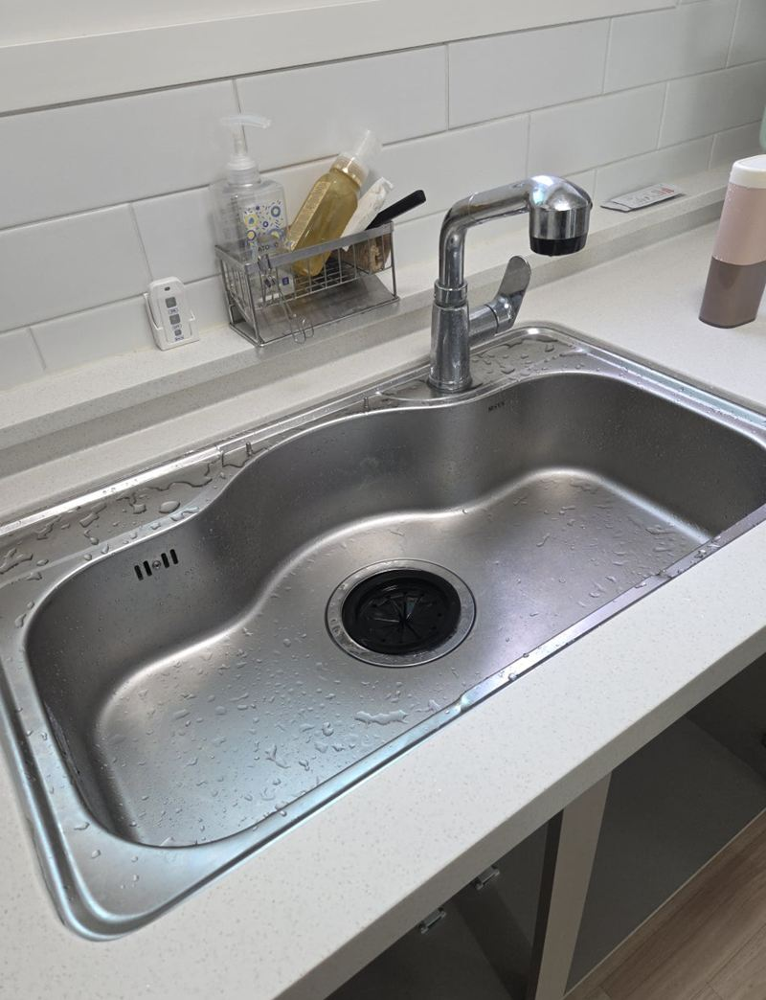
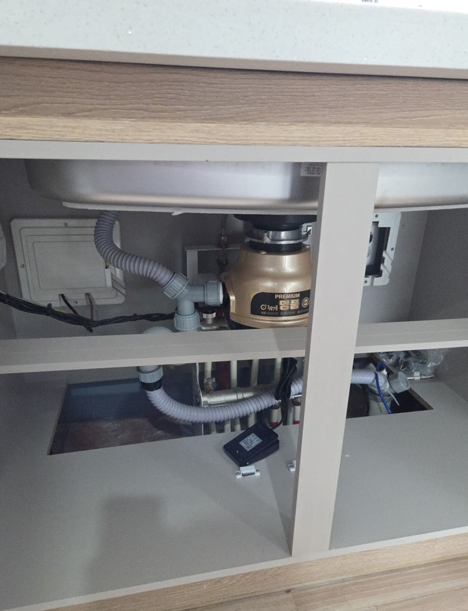
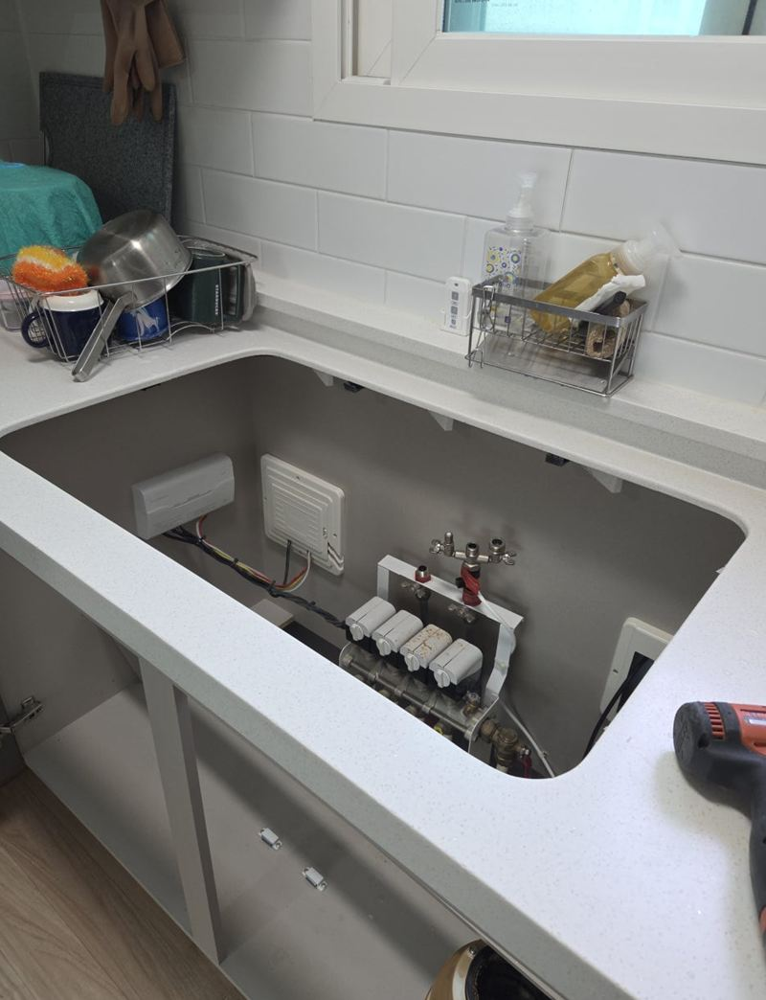
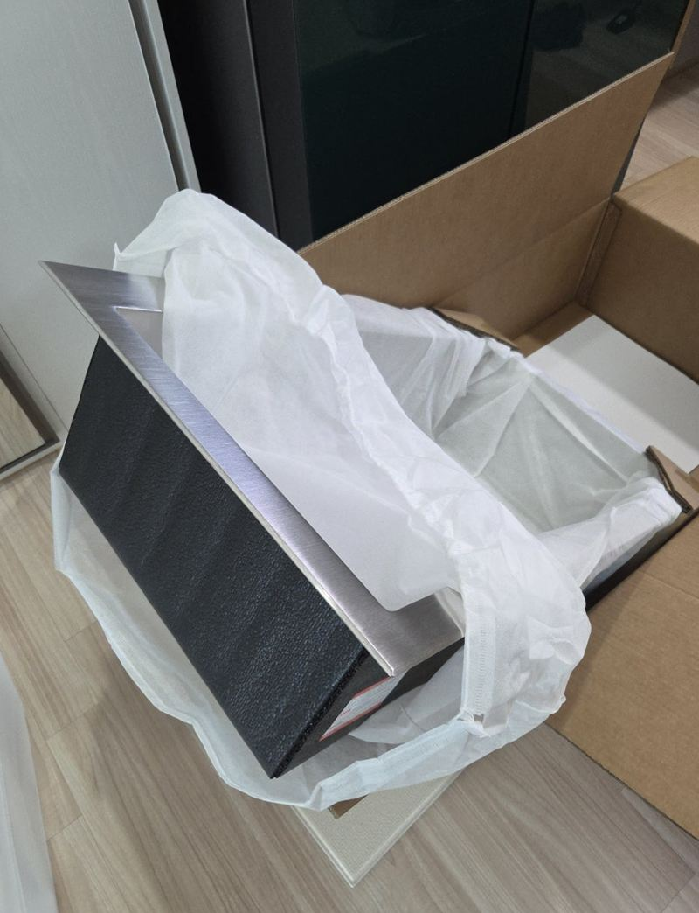
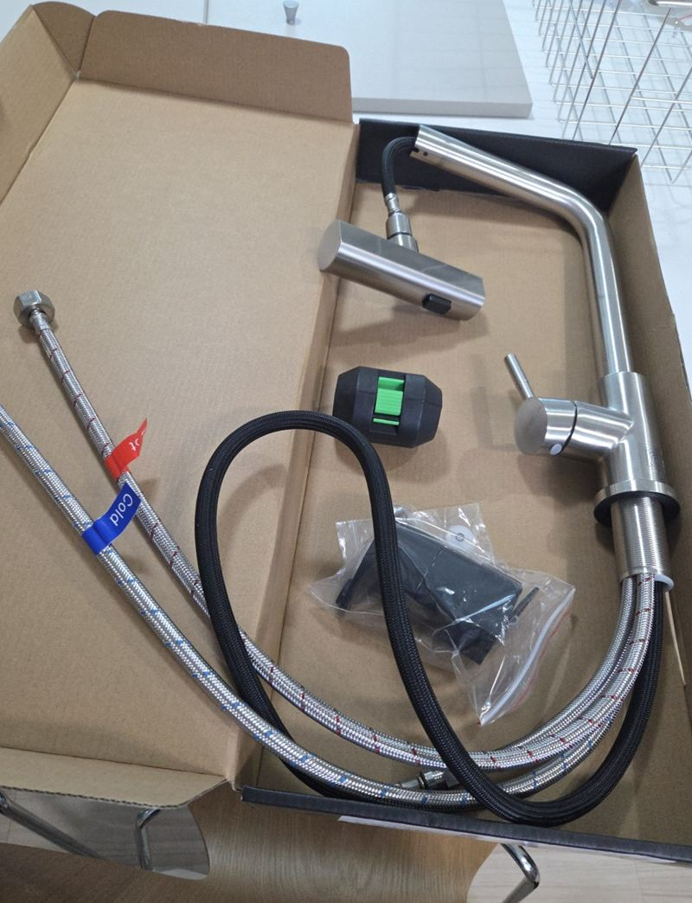
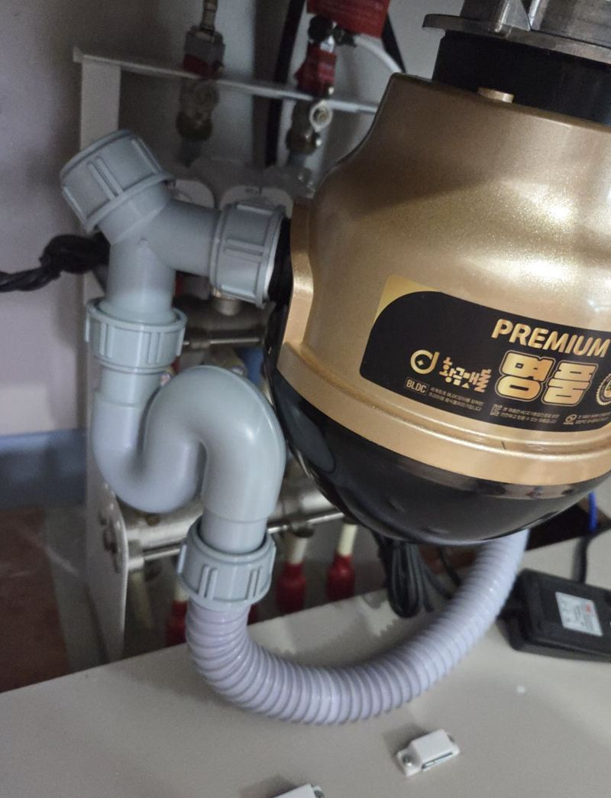

김포 엠보코팅 사각 싱크볼 교체 가격

 교체 전교체 후
교체 전교체 후← 밀어서 전후 비교 →
상판 아래에 붙은 언더싱크볼을 쓰던 집이었어요. 볼 안쪽이 좁게 느껴지고, 상판과 볼이 만나는 틈에 물때가 끼어 청소가 힘들다고 하셨어요. 쓰던 음식물처리기는 그대로 쓰고 싶어 하셨고요. 배수 구조는 살리고, 넓은 엠보코팅 사각볼을 상판 위에 얹는 인셋 방식으로 바꿨어요.
| 현장 | 김포 풍무동 아파트 주방 |
|---|---|
| 고민 | 언더볼이 좁고 상판 틈 물때 청소가 어려움 |
| 한 일 | 급수 차단 → 수전·처리기 분리 → 언더볼 탈거 → 인셋 사각볼 → 재연결 |
| 살린 것 | 쓰던 음식물처리기와 배수 구조 |
언더볼과 인셋볼, 어떻게 다를까
| 언더싱크볼 | 인셋 사각볼 | |
|---|---|---|
| 붙는 위치 | 상판 아래에 브라켓·실리콘으로 고정 | 상판 구멍 위에 테두리를 걸쳐 얹음 |
| 청소 | 상판과 볼 사이 틈에 물때가 끼기 쉬움 | 틈이 겉으로 드러나 닦기 쉬움 |
| 교체 | 떼어 낼 때 상판 손상 주의 | 다음 교체가 비교적 간단 |
고객님이 미리 상판 구멍의 가로·세로를 재서 알려 주셔서, 맞는 크기의 사각볼을 준비해 갈 수 있었어요. 현장에서는 수전 위치와 하부장 구조도 같이 확인했어요.
음식물처리기 연결을 살리며 철거
급수 밸브를 잠그고 수전 연결부터 풀었어요. 그다음 배수통과 음식물처리기 연결 부위를 하나씩 해체하며, 어디가 어떻게 이어져 있었는지 기억해 뒀어요. 언더볼은 브라켓을 먼저 떼고 실리콘을 정리하며 상판이 상하지 않게 빼냈어요.




새 사각볼 앉히고 다시 연결
새 엠보코팅 사각볼을 구멍에 앉혀 수평을 맞추고 테두리를 실리콘으로 고정했어요. 기억해 둔 순서대로 배수통과 음식물처리기, 수전을 다시 이었고, 물을 받아 한 번에 빼며 연결부에서 새는 곳이 없는지 확인했어요.


이 집 견적에서 따져 본 네 가지
- 볼 크기와 구멍지금 구멍에 맞는 크기면 간단하고, 크기가 다르면 상판 가공이 더해져요.
- 언더형이냐 인셋형이냐언더볼 철거는 브라켓과 실리콘 정리 시간이 더 들어요.
- 연결 기기음식물처리기, 정수기, 식세기가 같이 물려 있으면 재연결 작업이 늘어요.
- 수전 교체 여부오래된 수전을 같이 바꾸면 한 번에 정리돼요.
싱크볼 교체 질문
음식물처리기 제품을 바꾸지 않아도 되나요?
배수구 규격이 맞으면 쓰던 제품을 그대로 연결해요. 이 현장도 기존 처리기를 다시 이었어요.
엠보코팅이 뭔가요?
표면에 작은 요철을 넣고 코팅한 마감이에요. 긁힘과 물때가 덜 보여 관리가 편해요.
치수는 어떻게 재서 보내면 되나요?
상판 구멍의 가로·세로와 볼 깊이, 하부장 안쪽 폭을 재 주시면 돼요.
교체 후 바로 물을 써도 되나요?
실리콘이 굳는 동안은 볼 테두리에 물이 고이지 않게 조심해 주세요. 작업이 끝날 때 함께 안내해요.
언더볼을 다시 언더볼로 바꿀 수도 있나요?
가능해요. 다만 상판 아래 브라켓 위치와 볼 크기가 맞아야 해서, 같은 방식으로 바꿀 때도 치수 확인이 먼저예요.
싱크볼 소음이 줄어드나요?
요즘 사각볼은 아래에 방음 패드가 붙어 있어서 물 떨어지는 소리가 확실히 줄어요.
아파트 입주 후 얼마 안 됐는데 바꿔도 되나요?
상판과 하부장이 새것이라면 볼만 바꾸는 작업이 오히려 깔끔하게 끝나요. 하자 보수 기간이 남았다면 먼저 확인해 보세요.
수전 위치가 볼과 안 맞으면요?
볼 크기가 커지면 수전이 볼 가장자리에 너무 붙을 수 있어요. 이럴 땐 수전 위치나 모델을 함께 조정해요.
싱크볼 교체 전에 미리 해 둘 일이 있나요?
하부장 안 물건을 비워 주시고, 음식물처리기 전원을 꺼 두시면 작업이 빨라져요.
다른 싱크볼·수전 현장
싱크볼 위 사진, 하부장 안 배관 사진, 구멍 치수를 보내 주세요.
전화 상담 010-4517-9872